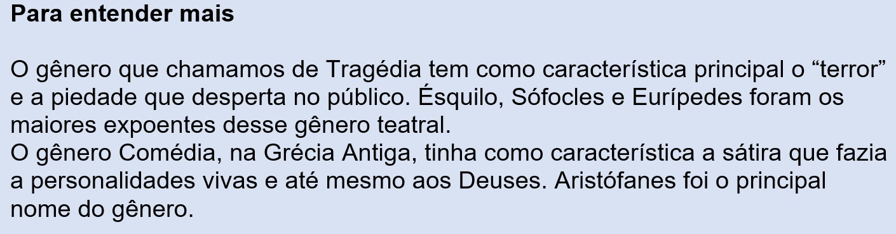
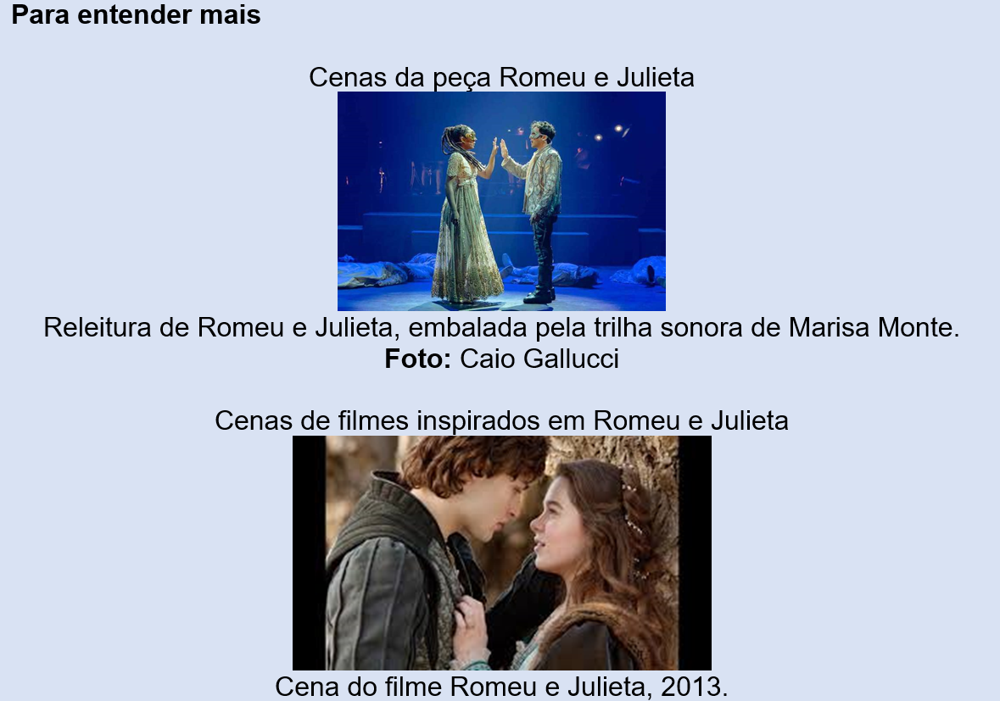
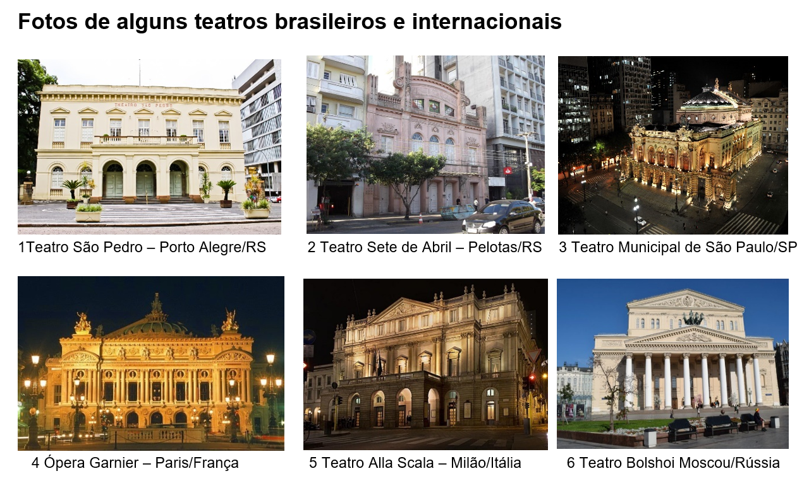
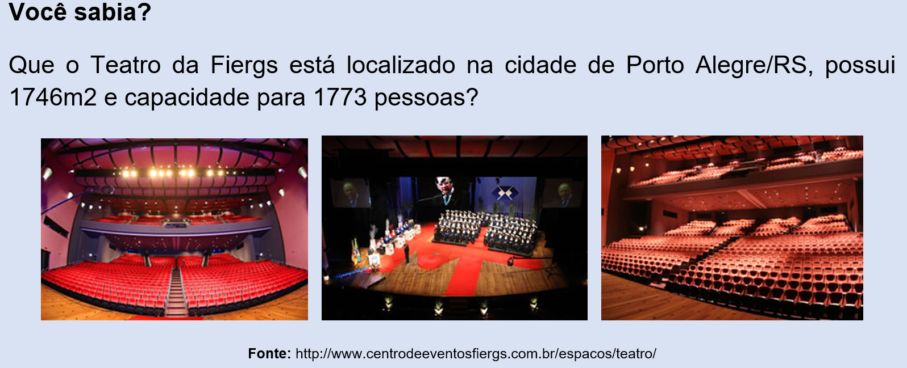
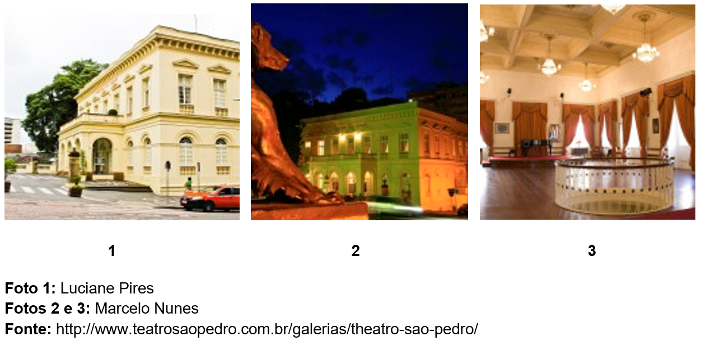

Capítulo 3: A colaboração da indústria para a realização do teatro
Questão-problema:
Você já assistiu a uma peça de teatro?
De que maneira a indústria contribui para o desenvolvimento do teatro?
Quais os materiais podemos observar na fachada de um teatro e no palco?
Fonte: http://arteecultuta.blogspot.com/2018/03/qual-teria-sido-o-primeiro-ator-na.html
Diz-se que Téspis de Ática foi o primeiro ator do ocidente. Nas festas Dionísicas, na Grécia Antiga, ele teria coberto o seu rosto com uma máscara e dito: Eu sou Dionísio!
O teatro – é a arte de representar por meio de gestos e/ou palavras.
Essa simples definição, no entanto, não abarca toda a riqueza dessa manifestação artística. Vamos realizar um jogo dramático semelhante aos que são utilizados nos cursos de formação de atores. Pense no seu trabalho cotidiano. Que ações com movimentos repetidos você normalmente desenvolve? Agora tente se imaginar realizando ações que seriam típicas de um trabalhador da construção civil ou da indústria moveleira. Ou de qualquer outro tipo de trabalho. Escolha um deles e pense nos movimentos (e em qual sequência) você precisaria realizar se estivesse, de fato, exercendo essa profissão. Tente lembrar e escreva toda a sequência de ações que você desenvolveu.
Reconstruindo conhecimentos:
Para entender mais:
A origem do teatro remonta às sociedades primitivas. Provavelmente, essas sociedades acreditavam que determinadas danças ou representações poderiam fazer com que os poderes sobrenaturais facilitassem sua sobrevivência. Em alguns momentos o teatro apresentou lendas e homenagens a deuses e heróis. Em sua forma atual o teatro surge em Atenas, na Grécia Antiga (séc. IV a.C.), a partir de festivais anuais em honra a Dionísio, o Deus do vinho e da alegria. As chamadas Festas Dionisíacas tinham um caráter cívico-religiosa e eram usadas como elemento de união da sociedade ateniense, sendo que em algumas delas eram realizados concursos teatrais. Daí surgem as grandes tragédias como “Édipo Rei”, Medeia e outras até hoje encenadas no mundo inteiro. Atenas é considerada a terra onde surgiu o teatro antigo.
Teatro de Herodion (Atenas, Grécia). Foto: Anastasia Fragkou / Shutterstock.com

A dança, como uma linguagem artística, apresenta constituintes, que são os movimentos.
Uma história visual da dança social em 25 movimentos”
No Século XV começou a popularizar-se o gênero teatral que ficou conhecido como Commedia Dell’Arte, de cárater cômico e satírico, em que cada ator tinha seu personagem fixo. As máscaras usadas para caracterizar os personagens eram bem mais leves do que as do antigo teatro grego, cobrindo apenas parte do rosto. As principais figuras das peças eram: Arlequin, Colombina, Doutor e Palhaço. Nos séculos XVI e XVII surgiram grandes dramaturgos como os espanhóis Miguel de Cervantes (1547-1616), Lope de Veja (1562-1635), Calderón de La Barca (1600-1681), o inglês William Shakespeare (1564-1616), o português Gil Vicente (1465-1536) e o francês Molière (1622-1673). Shakespeare é o autor da peça considerada mais popular em todo o mundo: Romeu e Julieta. Até hoje, o texto é encenado e serve de inspiração para inúmeros filmes, músicas, poesias e pinturas. A peça escrita em cinco atos, trata do romance entre dois jovens da cidade italiana de Verona no final do século XVI que, ao se apaixonarem, desconhecem serem filhos de famílias inimigas. Uma série de acontecimentos leva-os a um casamento secreto. Quando Romeu é banido de Verona por seu envolvimento em um duelo ilegal, traçam um plano com ajuda do Frei que os casara. O plano fracassa e os dois acabam morrendo.
(Trecho da cena V do Ato I)
Romeu - Que dama é aquela que enriquece o braço daquele cavalheiro?
Criado - Desconheço-a, meu senhor.
Romeu - Oh! ela ensina a tocha a ser luzente. Dir-se-ia que da face está pendente da noite, tal qual joia mui preciosa da orelha de uma etíope mimosa. Bela demais para o uso, muito cara para a vida terrena.
Como clara pomba ao lado de gralhas tagarelas, anda no meio das demais donzelas. Vou procurá-la, ao terminar a dança porque a esta rude mão possa dar ansa de tocar nela e, assim, ficar bendita. Meu coração, até hoje, teve a dita de conhecer o amor? Oh! que simpleza! Nunca soube até agora o que é
beleza.
Fonte: https://williamshakespearewilliam.blogspot.com/2009/02/romeu-e-julieta-ato-i-cena-v.html

Alguns elementos típicos de uma peça de teatro são: o ator, o cenário, o figurino e a cena. Segundo o Dicionário de Teatro de Patricé Pavis:
Ator: É quem desempenha determinado papel em peças teatrais, filmes etc. Aquele que interpreta ou encarna um personagem, situando-se no cerne de um acontecimento teatral. “Ele é o vínculo vivo entre o texto do autor, as diretivas de atuação do encenador e o olhar e a audição do espectador” (Pavis, 1999, p.30).
Cenário: Conjunto de elementos visuais – móveis, objetos, telões, adereços e etc – que compõem o espaço onde se apresenta um espetáculo teatral ou cinematográfico. Serve de moldura para a ação e pode ser composto por elementos pictóricos, arquitetônicos, plásticos e etc. “A própria origem do termo (em francês, décor: pintura, ornamentação, embelezamento) indica, suficientemente, a concepção mimética e pictórica da infraestrutura decorativa” (Pavis, 1999, p. 42).
Figurino: A vestimenta dos atores e atrizes, incluindo os adereços. Normalmente é caracterizado por um conjunto de índices sobre a idade, o sexo, a classe social ou a profissão das personagens. “Na encenação contemporânea, o figurino tem papel cada vez mais importante e variado, tornando-se verdadeiramente a “segunda pele do ator...” (Pavis, 1999, p.168).
Como você pode observar, para que uma peça de teatro aconteça, muitos profissionais de diversas áreas estarão envolvidos. A indústria da construção civil está presente na construção do prédio do teatro, no palco e nos ornamentos. Quais materiais advindos da construção civil são utilizados na construção de um teatro? Quantos trabalhadores esta indústria emprega? De onde vem a matéria-prima para a confecção dos cenários de uma peça de teatro?

Diferenças entre palcos
Teatro Arena
O teatro de arena, como podemos ver na imagem, permite ao espectador a visualização de uma peça teatral por vários ângulos.
Palco Italiano
No palco italiano, temos uma nova configuração: o espectador fica de frente para o palco. É ainda o mais utilizado no teatro ocidental.

A indústria contribui de forma significativa para o desenvolvimento e solidificação do teatro como uma das várias manifestações artísticas brasileiras. Da indústria moveleira à indústria têxtil, assistimos, além da atuação dos atores, a atuação de profissionais construindo cenários e confeccionando figurinos que são apresentados em várias regiões do país. Você já refletiu sobre a presença da indústria no teatro? Quais os setores estão presentes além da indústria moveleira e têxtil?
Assista ao vídeo sobre a montagem de um cenário:
Assista ao vídeo sobre a montagem de um figurino:
No Rio Grande do Sul, o teatro sempre teve muita importância. Porto Alegre tem o belo Theatro São Pedro, que foi inaugurado em 1858.

Apresentações de peças de teatro no Teatro São Pedro
Fonte: https://estado.rs.gov.br/theatro-sao-pedro-esta-de-aniversario-nesta-quinta
O trabalho do dramaturgo
A dramaturgia é a arte de compor e de representar uma história em cena (no palco). Dá-se o nome de dramaturgo à pessoa que escreve as peças para que estas sejam representadas no teatro e/ou que adapta livros para esse formato. O dramaturgo, por conseguinte, dedica-se tanto à redação dos textos como à concepção da peça (encenação e afins), pois encarrega-se do desenvolvimento da estrutura da representação. A principal diferença entre um dramaturgo e um escritor que se dedica a outros gêneros é que, na dramaturgia, a ação decorre no preciso momento e lugar em que vai sendo apresentada.
Fonte: https://conceito.de/dramaturgia
Os principais expoentes da dramaturgia brasileira foram Nelson Rodrigues (1912-1980), Augusto Boal (1931-2009), Oduvaldo Vianna Filho (1936-1974), Maria Adelaide Amaral (1942) e Dias Gomes (1922-1999). Na atualidade, destacam-se os nomes de Alexandre Dal Farra, Silvia Gomez, Leonardo Cortez e Newton Moreno.
Fonte: http://saopauloreview.com.br/15-dramaturgos-da-atualidade-que-voce-precisa-conhecer/
No Rio Grande do Sul cabe registrar: Teatro do Estudante (1941), Teatro Universitário (1955), Teatro de Equipe (1958), Teatro de Arena (1967), Tribo de Atuadores Ói Nóis Aqui Traveiz (1978), Teatro Vivo (1979-1990), Companhia Stravaganza (1988), Grupo de Teatro De Pernas Pro Ar (1988) e Grupo Caixa Preta (1994).
“O Amargo Santo da Purificação” – Ói Nóis Aqui Traveiz (foto de Claudio Etges)
Fonte: http://www.oinoisaquitraveiz.com.br/p/a-tribo.html
Link para imagem: http://revistapress.com.br/jornal-da-capital/laboratorio-aberto-com-a-tribo-de-atuadores-oi-nois-aqui-traveiz-na-ccmq/
Praticando:
Augusto Boal, um dos fundadores do Teatro de Arena de São Paulo, desenvolveu as teorias do “Teatro do Oprimido” onde preconiza que “todo mundo pode fazer teatro, inclusive os atores”. Ele procurou divulgar os exercícios e jogos que criou ou recolheu da prática popular, pensando em qualificar a atividade de todos os que desejassem dizer algo através do teatro. Outros estudiosos do teatro ressaltam o importante papel dos jogos, no teatro e na vida. O ideal é que os jogos sejam uma atividade de grupo. Todavia, assim como um “game”, podemos experimentá-los sozinhos ou em dupla. Para isso, apresentamos algumas sugestões:
1. OUVINDO O AMBIENTE – Foco: Ouvir o maior número de sons possível no ambiente próximo. Instrução: Ouça todos os sons à sua volta – até os mais imperceptíveis! Preste atenção! Procure ouvir o maior número de sons possível! Avaliação: Quais sons você ouviu? Quantos? Faça um relato escrito do exercício. Nota: Esse exercício pode ser realizado em qualquer ambiente interno ou externo. Colecione os relatos dos jogos e exercícios realizados.
2. OUVINDO MÚSICA – Foco: Concentração. Instrução: Procure uma música exclusivamente instrumental (sonata, concerto, sinfonia... de compositores como Bach, Villa-Lobos, Tchaikovsky, Mozart...). Concentre-se no som e timbre dos diferentes instrumentos; tente identificá-los (escreva); perceba quando entra um novo instrumento... Avaliação: Escreva detalhadamente o que ouviu e sentiu.
3. MÚSICA E DESENHO – Foco: Concentração, Relaxamento. Instrução: A partir de uma música instrumental, relaxante e tranquila, concentre-se no som e procure desenhar livremente. Use uma folha grande e o material que desejar: lápis preto ou de cor, giz de cera, lápis pastel, carvão etc e trabalhe livremente.
4. CAMINHADA NO ESPAÇO – Foco: Sustentar a si próprio ou deixar que a substância do espaço o sustente, de acordo com a instrução. Instrução: Você atravessa o espaço e deixa que o espaço atravesse você! Enquanto caminha, entre dentro de seu corpo e sinta as tensões! Sinta seus ombros! Sinta a coluna de cima a baixo! Sinta o seu interior! Observe! Anote! Você é seu único suporte! Você sustenta o seu rosto! Seus dedos dos pés! Seu esqueleto todo! Se você não se sustentasse, você se despedaçaria em mil partes! Agora mude! Caminhe pelo espaço e deixe que o espaço o sustente! O seu corpo entenderá! Perceba o que o seu corpo está sentindo! Coloque espaço onde estão seus olhos! Deixe que o espaço sustente seus olhos! Deixe que o espaço sustente seu rosto! Seus ombros! Agora mude! Agora é você quem se sustenta novamente!
Uma de suas obras recebeu o título de “Quem casa, quer casa”.
A trama se desenvolve a partir do casamento do casal de filhos de Dona Fabiana com os de Anselmo. Eles, no entanto, não se entendem e não param de brigar, enquanto o marido de Fabiana, não faz nada. A briga chega à agressão física, até que Anselmo surge e resolve a situação e entrega as chaves de duas casas alugadas aos filhos.
Fonte: https://www.teatronaescola.com/index.php/banco-de-pecas/item/quem-casa-quer-casa-martins-pena
Leia a Cena III da peça “Quem casa, quer casa”, de Martins Pena. Após a leitura, tente criar uma cena com diálogos. Pode ser uma situação cotidiana, de trabalho, enfim, solte a sua imaginação.
Quem casa, quer casa
Martins Pena
Cena III
Eduardo e as ditas. Eduardo, na direita baixa, entra em mangas de camisa, cabelos grandes muito embaraçados, chinelas, trazendo rabeca.
EDUARDO (da porta) - Olaia, vem voltar à música.
FABIANA - Psiu, psiu, venha cá!
EDUARDO - Estou muito ocupado. Vem voltar à música.
FABIANA (chegando-se para ele e tomando-o pela mão) - Fale primeiro comigo. Tenho muito que lhe dizer.
EDUARDO - Pois depressa, que não me quero esquecer da passagem que tanto me custou a estudar. Que música, que trêmolo! Grande Bériot!
FABIANA - Deixemo-nos agora de Berliós e tremidos e ouça-me.
EDUARDO - Espere, espere; quero que aplauda e goze um momento do que é bom e sublime; assentem-se (Obriga-as a sentarem-se e toca rabeca, tirando sons extravagantes, imitando o Trêmulo.)
FABIANA (levantando-se enquanto ele toca) - E então? Peior, peior! Não deixará esta infernal rabeca? Deixe, homem! Ai, ai!
OLAIA (ao mesmo tempo) - Eduardo, Eduardo, deixa-te agora disso. Não vês que a mamãe se aflige. Larga o arco. (Pega na mão do arco e forceja para o tirar.)
FABIANA - Larga a rabeca! Larga a rabeca! (Pegando na rabeca e forcejando.)
EDUARDO (resistindo e tocando entusiasmado) - Deixem-me, deixem-me acabar, mulheres, que a inspiração me arrebata... Ah!...ah (Dá com o braço do arco nos peitos de Olaia e com o da rabeca nos queixos de Fabiana, isto tocando com furor.)
OLAIA - Ai, meu estômago!
FABIANA (ao mesmo tempo) - Ai, meus queixos!
EDUARDO (tocando sempre com entusiasmo) - Sublime! Sublime! Bravo! Bravo!
FABIANA (batendo com o pé, raivosa) - Irra!
EDUARDO (deixando de tocar) - Acabou-se. Agora pode falar.
FABIANA - Pois agora ouvirás, que estou cheia até aqui... Decididamente já não o posso nem quero aturar.
OLAIA - Minha mãe!
EDUARDO - Não?
FABIANA - Não e não senhor. Há um ano que o senhor casou-se com minha filha e ainda está às minhas costas. A carga já pesa! Em vez de gastar as horas tocando rabeca, procure um emprego, alugue uma casa e, fora daqui com sua mulher! Já não posso com as intrigas e desavenças em que vivo, depois que moramos juntos. É um inferno! Procure casa, procure casa... Procure casa!
EDUARDO - Agora, deixe-me também falar... Recorda-se do que lhe dizia eu quando se tratou do meu casamento com sua filha?
OLAIA - Eduardo!...
EDUARDO - Não se recorda?
FABIANA - Não me recordo de nada... Procure casa. Procure casa!
EDUARDO - Sempre é bom que se recorde... Dizia eu que não podia casar-me por faltarem-me os meios de por casa e sustentar família. E o que respondeu-me a senhora a esta objeção?
FABIANA - Não sei.
EDUARDO - Pois eu lhe digo: respondeu-me que isso não fosse a dívida, que em quanto à casa podíamos ficar morando aqui juntos, e que aonde comiam duas pessoas, bem podiam comer quatro. Enfim, aplainou todas as dificuldades... Mas então queria a senhora pilhar-me para marido de sua filha... Tudo se facilitou; tratava-me nas palmas das mãos. Agora que me pilhou feito marido, grita: Procure casa! Procure casa! Mas eu agora é que não estou para aturá-la; não saio daqui. (Assenta-se com resolução numa cadeira e toca rabeca com raiva.)
FABIANA (indo para ele) - Desavergonhado! Malcriado!
OLAIA (no meio deles) - Minha mãe!
FABIANA - Deixa-me arrancar os olhos a este traste!
OLAIA - Tenha prudência! Eduardo, vai-te embora.
EDUARDO (levanta-se enfurecido, bate o pé e grita) - Irra! (Fabiana e Olaia recuam espavoridas.) (Indo para Fabiana:) Bruxa! Vampiro! Sanguechuga da minha paciência! Ora, quem diabo havia dizer-me que esta velha se tornaria assim!
FABIANA - Velha, maroto, velha?
EDUARDO - Antes de pilhar-me para marido da filha, eram tudo mimos e carinhos. (Arremedando:) Sr. Eduardinho, o senhor é muito bom moço... Há de ser um excelente marido... Feliz daquela que o gozar... ditosa mãe que o tiver por genro... Agora escoiceia-me, e descompõe... Ah, mães, mães espertalhonas! Que lamúrias para empurrarem as filhas! Estas mães são mesmo umas ratoeiras... Ah, se eu te conhecesse!...
FABIANA - Se eu também te conhecesse, havia de dar-te um...
EDUARDO - Quer dançar a polca?
FABIANA (desesperada) - Olhe que me perco...
OLAIA - Minha mãe...
EDUARDO (vai saindo, cantando e dançando a polca) - Tra la la la, ri la ra ta...(Etc.,etc.)
FABIANA (querendo ir a ele e retida por Olaia) - Espera, maluco de uma figa...
OLAIA - Minha mãe, tranqüilize-se, não faça caso.
FABIANA - Que te hei de fazer o trêmolo e a polca com os olhos fora da cara! EDUARDO (chegando à porta) - Olaia, vem voltar à música...
FABIANA (retendo-a) - Não quero que vá lá...
EDUARDO (gritando) - Vem voltar à música...
FABIANA - Não vai!
EDUARDO (gritando e acompanhando com a rabeca) - Vem voltar à música!
FABIANA (empurrando-a) - Vai-te com o diabo!
EDUARDO - Vem comigo. (Vai-se com Olaia.)
Fonte: https://www.teatronaescola.com/index.php/banco-de-pecas/item/quem-casa-quer-casa-martins-pena
O que aprendi:
Neste capítulo, buscamos desenvolver com você atividades e reflexões sobre o teatro, sua história, características, dramaturgos e seus elementos. Nunca esqueça que a indústria tem um papel importante para o desenvolvimento do teatro; se os atores representam, a indústria apresenta suas contribuições através dos setores têxtil, calçadista, da construção civil e da metalurgia, por exemplo. São essas contribuições que fazem desta arte, uma das mais encantadoras e também mais desafiadoras; afinal representar o mundo e o cotidiano exige ensaios, estudos, o pensar em um cenário, enfim, elementos que só o teatro pode nos oferecer.
Quais são suas respostas para as situações que lançamos ao longo deste capítulo sobre a indústria e sua relação com o teatro? Vamos lá?!